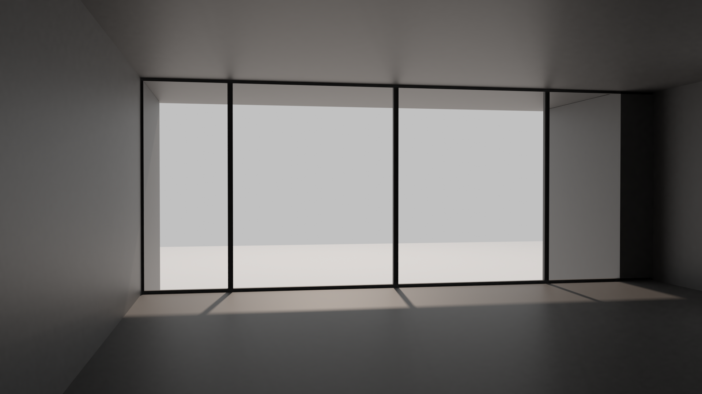

Hay cinco constantes que se repiten a lo largo de la obra de Kahn: La composición y la integridad de un edificio, el respeto por los materiales, el modulo espacial como elemento básico cuya repetición determina la planta, la luz como factor constructivo y las relaciones entre los distintos elementos arquitectónicos.
Materiales Casa Shapiro
Planta superior
Suelo: madera de roble y baldosas de vinilo en la cocina
Techo: madera de cedro
Paredes: yeso blanco y yeso de arena fina en algunas zonas
Planta inferior
Suelo: cemento fino y baldosas en los baños
Techo: madera de cedro y yeso en el recibidor y los baños
Paredes: yeso blanco, yeso de arena fina y baldosas en los baños
Ventanas: madera de doble abertura y Glulam
Puertas: HYLITE y ventanas por Mississippi Glass Co. y puertas sólidas
Tejado: IKO Type IV Glass Ply Sheet
Luz Casa Shapiro
La casa se encuentra situada cerca de una presa en un lote arbolado que desciende hasta el rio. Las ventanas principales están orientadas hacia el Este lo que permite que los rayos de luz incidan casi perpendicularmente sobre la fachada principal. La luz se proyecta con mayor intensidad en el las horas tempranas del día. Además, la vivienda consta de ventanas al norte y al sur que iluminan el interior durante la mayoría de horas solares.
En este caso, Kahn emplea la luz directa, especialmente, para la planta superior la cual está pensada para la actividad diaria. Para ello utiliza grandes ventanales que permiten la entrada de la luz. Esto genera variabilidad cromática y reflectiva en los materiales. Además, esto pretende conseguir un gran contacto con el exterior y la naturaleza.

Modelo 3D interior Casa Shapiro hacia la fachada principal
La luz natural permitirá que el usuario sea testigo del paso del tiempo y captará los reflejos del entorno. De esta manera se establece un paralelismo entre la naturaleza, que es creación del universo y, la arquitectura, que es creación del hombre, introduciendo la naturaleza en la arquitectura por medio de la luz solar.